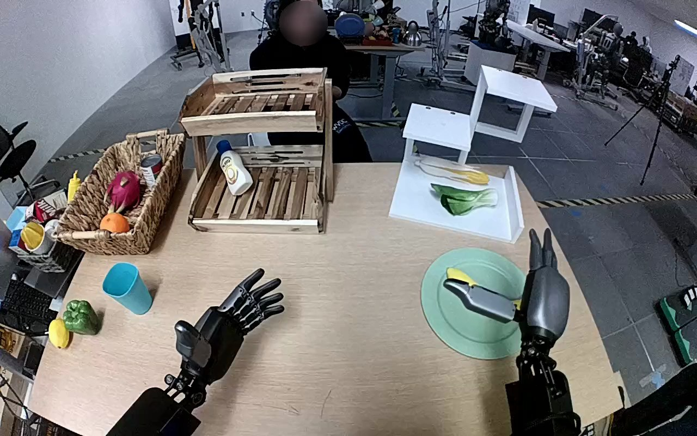

NVIDIA GR1 · 3
Video 3

Annotation
From the dedicated visual review of this video (humanoid_action_v1). Plain text · JSON
Observed outcome
Outcome
The banana is removed from the teal plate and brought to the bare tabletop to its left. The right hand visibly opens over it at the ending.
Terminal state
The teal plate is empty. The yellow banana is beneath the opened right hand to the left of the plate; its ends are visible, but its center and precise supporting contact are occluded by the palm. The left hand is still open nearby.
Hand roles
- Right
Grasps, lifts, transports and lowers the banana, then opens its fingers at the tabletop destination.
- Left
Stays open and substantially stationary; does not touch, support or receive the banana.
Coordination
Single-hand manipulation; no hand-to-hand transfer or human interaction occurs. The left hand stays clear throughout.
Robot-side evidence
- Description
The near-side perspective shows the two forearms entering from the corresponding lower sides and extending away toward the table. The active forearm remains connected to the lower-right robot arm, with the back of its hand upward and thumb on the inward side; the opposite open hand is palm-up. This paired arm arrangement supports robot-relative right for the active hand rather than assuming sides from target position. The source instruction independently also identifies the right hand.
- Confidence
medium-high
- Limitations
Torso and shoulder joints are outside the view, so direct shoulder attachment cannot be followed.
Chronology
| Frames | Observation |
|---|---|
| 0–28 | Right hand is open over the banana on the teal plate and shifts to surround it; left hand remains open and idle. |
| 29–62 | Right hand turns over the banana and curls its fingers and thumb around it while it is still at the plate. |
| 63–80 | Right hand lifts the banana clear of the plate, maintaining its grasp. |
| 81–108 | Right arm carries the held banana leftward over the bare tabletop beside the plate and lowers it near the idle left hand. |
| 109–115 | Right hand remains low with the banana beneath it at the tabletop destination; the palm obscures the banana center and exact surface contact. |
| 116–119 | Right fingers and thumb open away from the banana. The banana remains beneath the open right hand on or immediately above the tabletop; no hand withdrawal is shown. |
Uncertainties
- The right palm partly occludes the banana and tabletop at the ending; finger opening is visible, but complete release into an independently resting state cannot be verified without hand withdrawal.
- The shoulder and torso are outside the view; anatomical right is supported by paired near-side arm arrangement and thumb orientation rather than visible shoulder attachment.
Complete review record action_review.json
{
"prompt_protocol": "humanoid_action_v1",
"prompt_provenance": "visually_authored_from_video_and_initial_frame",
"reviewed_contact_sheets": [
"sheet_001.jpg"
],
"inspected_frame_stride": 2,
"inspected_sampled_frame_count": 60,
"initial_scene": "Near-side overhead view of paired robot forearms extending toward a wooden table. The open right hand is above a yellow banana on the teal plate; the left hand is open away from the target.",
"observed_sequence": [
{
"start_frame": 0,
"end_frame": 28,
"action": "Right hand is open over the banana on the teal plate and shifts to surround it; left hand remains open and idle.",
"confidence": "high"
},
{
"start_frame": 29,
"end_frame": 62,
"action": "Right hand turns over the banana and curls its fingers and thumb around it while it is still at the plate.",
"confidence": "high"
},
{
"start_frame": 63,
"end_frame": 80,
"action": "Right hand lifts the banana clear of the plate, maintaining its grasp.",
"confidence": "high"
},
{
"start_frame": 81,
"end_frame": 108,
"action": "Right arm carries the held banana leftward over the bare tabletop beside the plate and lowers it near the idle left hand.",
"confidence": "high"
},
{
"start_frame": 109,
"end_frame": 115,
"action": "Right hand remains low with the banana beneath it at the tabletop destination; the palm obscures the banana center and exact surface contact.",
"confidence": "high for visible position; medium for contact"
},
{
"start_frame": 116,
"end_frame": 119,
"action": "Right fingers and thumb open away from the banana. The banana remains beneath the open right hand on or immediately above the tabletop; no hand withdrawal is shown.",
"confidence": "high for finger opening; medium for independent resting"
}
],
"arm_hand_roles": {
"right": "Grasps, lifts, transports and lowers the banana, then opens its fingers at the tabletop destination.",
"left": "Stays open and substantially stationary; does not touch, support or receive the banana."
},
"anatomical_side_evidence": {
"description": "The near-side perspective shows the two forearms entering from the corresponding lower sides and extending away toward the table. The active forearm remains connected to the lower-right robot arm, with the back of its hand upward and thumb on the inward side; the opposite open hand is palm-up. This paired arm arrangement supports robot-relative right for the active hand rather than assuming sides from target position. The source instruction independently also identifies the right hand.",
"confidence": "medium-high",
"limitations": "Torso and shoulder joints are outside the view, so direct shoulder attachment cannot be followed."
},
"coordination": "Single-hand manipulation; no hand-to-hand transfer or human interaction occurs. The left hand stays clear throughout.",
"outcome": "The banana is removed from the teal plate and brought to the bare tabletop to its left. The right hand visibly opens over it at the ending.",
"terminal_state": "The teal plate is empty. The yellow banana is beneath the opened right hand to the left of the plate; its ends are visible, but its center and precise supporting contact are occluded by the palm. The left hand is still open nearby.",
"uncertainties": [
"The right palm partly occludes the banana and tabletop at the ending; finger opening is visible, but complete release into an independently resting state cannot be verified without hand withdrawal.",
"The shoulder and torso are outside the view; anatomical right is supported by paired near-side arm arrangement and thumb orientation rather than visible shoulder attachment."
],
"annotation_discrepancies": [],
"evidence_frame_indices": [
0,
26,
56,
76,
88,
100,
110,
114,
118,
119
],
"selected_execution_status": "uncertain",
"selected_execution_status_reason": "Transport from plate to tabletop destination and final finger opening are visible; the palm obscures exact contact and no withdrawal confirms independently resting placement.",
"inspection_coverage": {
"source_frame_count": 120,
"sampled_frame_indices": "0, 2, 4, ..., 118",
"all_returned_contact_sheets_visually_viewed": true,
"native_transition_and_final_frames_visually_viewed": [
26,
56,
76,
88,
100,
110,
114,
118,
119
],
"source_initial_png_visually_viewed_at_native_resolution": true
},
"video_id": "3",
"dataset": "NVIDIA_GR1_100",
"dedicated_review_agent": "review_gr1_3",
"review_source_video": "NVIDIA_GR1_100/3/original/original.mp4",
"source_frame_count": 120,
"source_fps": 20.0,
"native_detail_frames": [
26,
56,
76,
88,
100,
110,
114,
118,
119
],
"world_model_prompt": "The robot closes its right hand around the yellow banana on the teal plate and lifts it clear. It carries the banana leftward to the bare wooden tabletop beside the plate, lowers it, and opens its fingers, leaving the banana beneath the open hand. Keep the camera fixed; preserve robot geometry, physically valid joint motion, and normal gripper opening and closing.",
"original_task_instruction": "Use the right hand to pick up banana from teal plate to wooden table.",
"selected_segment": {
"start_frame": 0,
"end_frame_exclusive": 120,
"reason": "Complete original single-task reference; no cropping or trimming requested."
},
"source_video_sha256": "cfed4d9cb0f5ba061cf72b9df2178e06a2621d6b0325049b02e58d2bbdd9588f",
"review_completed_at": "2026-10-13T17:54:09.444778+00:00"
}